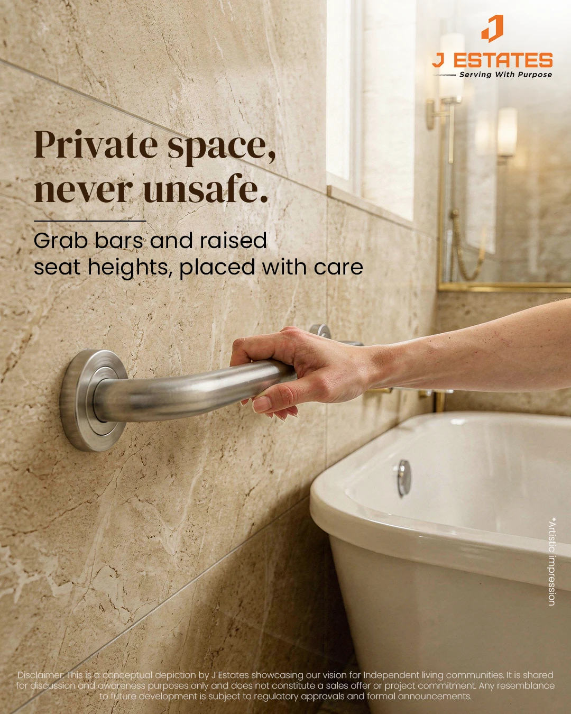
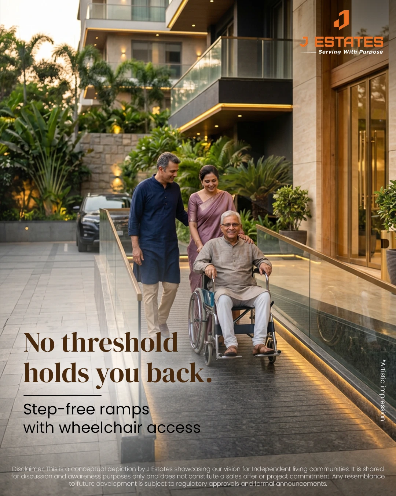
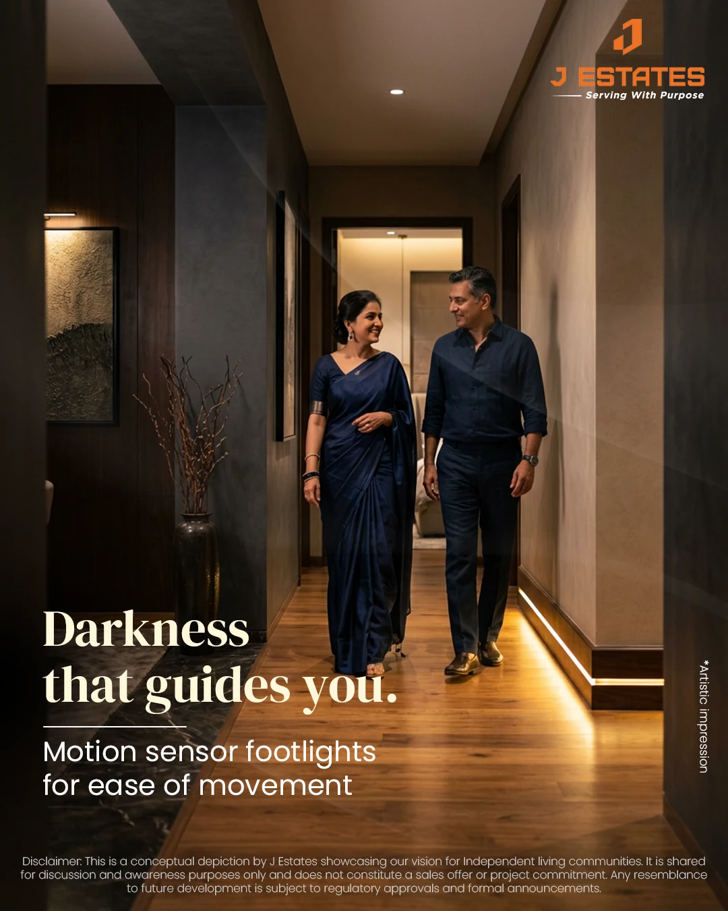
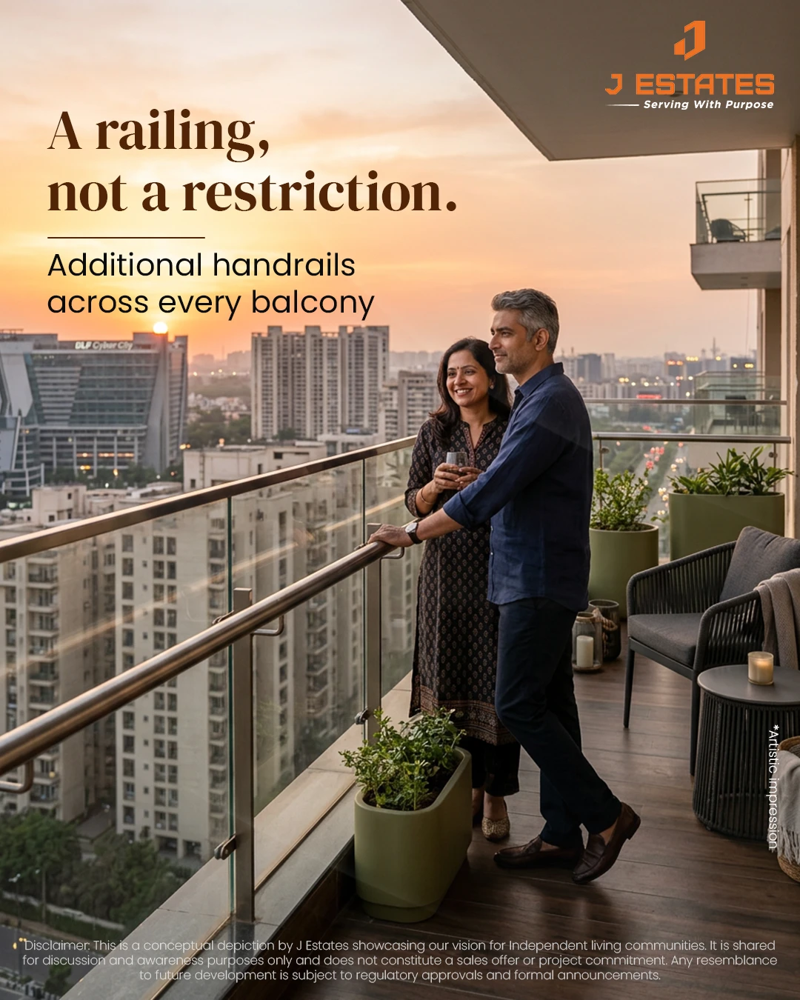
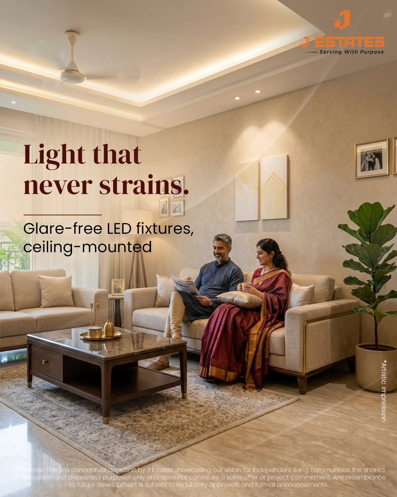
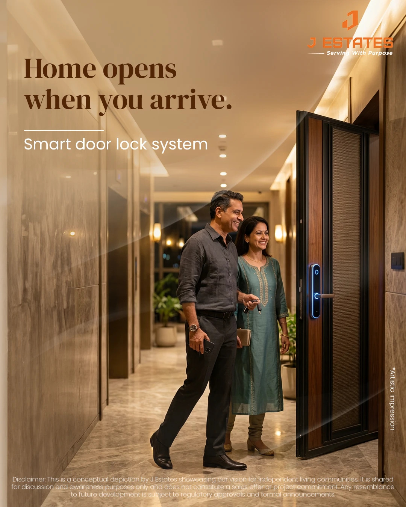
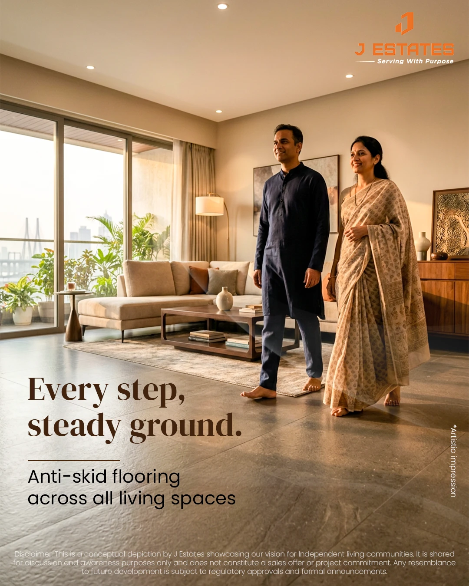
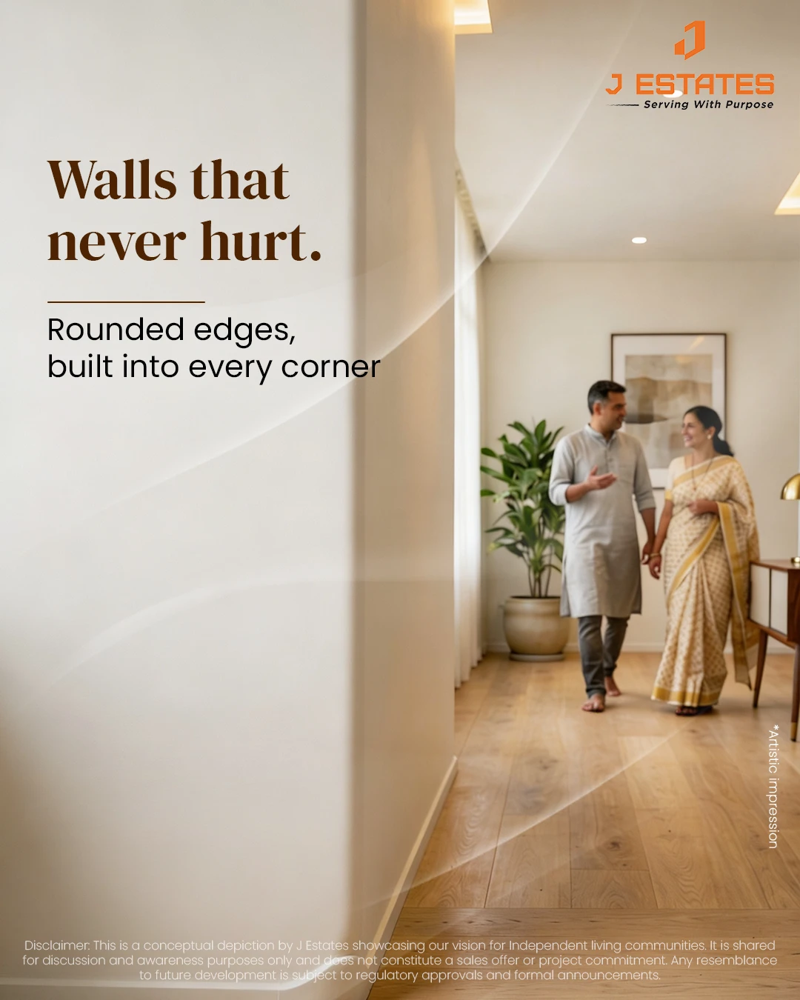
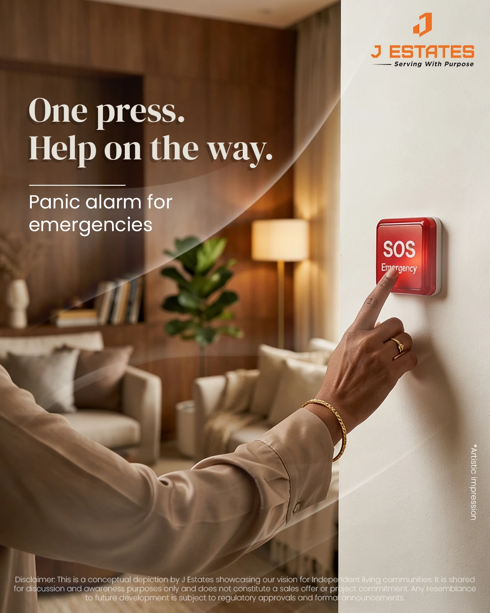

J Estates
J 36
A nine-part social series for J Estates' concept of independent senior living. Every safety feature is written as a freedom.
- Client
- J Estates
- Project
- J 36, independent senior living (concept)
- My role
- Campaign concept, copywriting
- Agency
- Mediamix









The problem
J 36 is J Estates' vision for independent living for seniors, presented as a conceptual depiction rather than a sales offer. Its features are all about safety: grab bars, step-free ramps, motion-sensor footlights, balcony handrails, glare-free lighting, smart locks, anti-skid floors, rounded edges and a panic alarm.
Each one exists because ageing brings risk. Describe a home through its risks, though, and it starts to sound like a care facility. Nobody chooses to move into that.
The decision
Lead with the life. Follow with the feature.
Every post is built in two parts. The headline describes what the resident can do or feel; the line beneath names the feature that makes it possible, in plain and specific words. The feature is never hidden or softened. It simply arrives second.
The lines
A railing, not a restriction.
Names the objection and inverts it in five words. Beneath it: 'Additional handrails across every balcony'.
No threshold holds you back.
Works twice: the literal threshold of a step-free entrance, and the figurative one of getting older. Beneath it: 'Step-free ramps with wheelchair access'.
Walls that never hurt.
Speaks to the fear in its own language, then answers it: 'Rounded edges, built into every corner'.
Darkness that guides you.
Turns night-time, a moment of risk, into a moment of help: 'Motion sensor footlights for ease of movement'.
One press. Help on the way.
The most urgent feature gets the shortest line, and the rhythm mirrors the action it describes: a panic alarm for emergencies.
The system
Nine posts, one feature each, with a fixed structure: a serif headline, a short rule, the feature in a single plain line, and warm, lived-in interiors with residents who are clearly in charge of their own day. The visuals are marked as artistic impressions, in keeping with a concept rather than a finished project.
My role
Campaign concept and copywriting for the series.